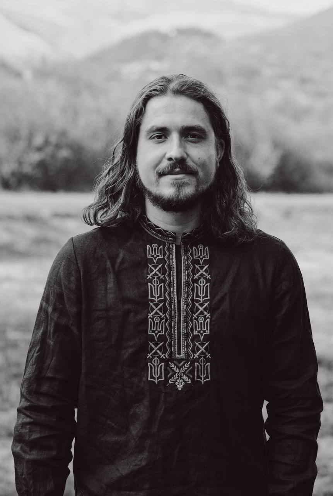

Our team
Get to know the visionary directors and producers behind this film.
Katy
This is a short description of item 1.

Tim
This is a short description of item 2.

Greg
This is a short description of item 3.

Markiian
This is a short description of item 4.